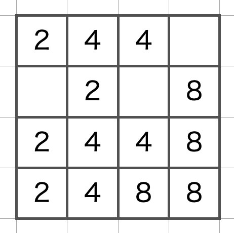
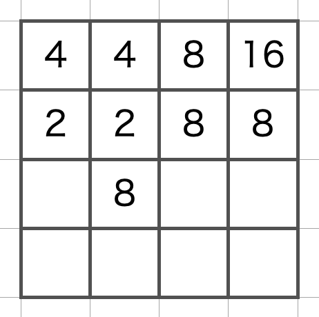
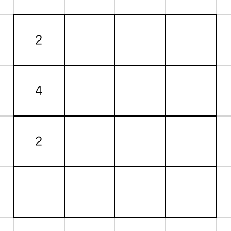
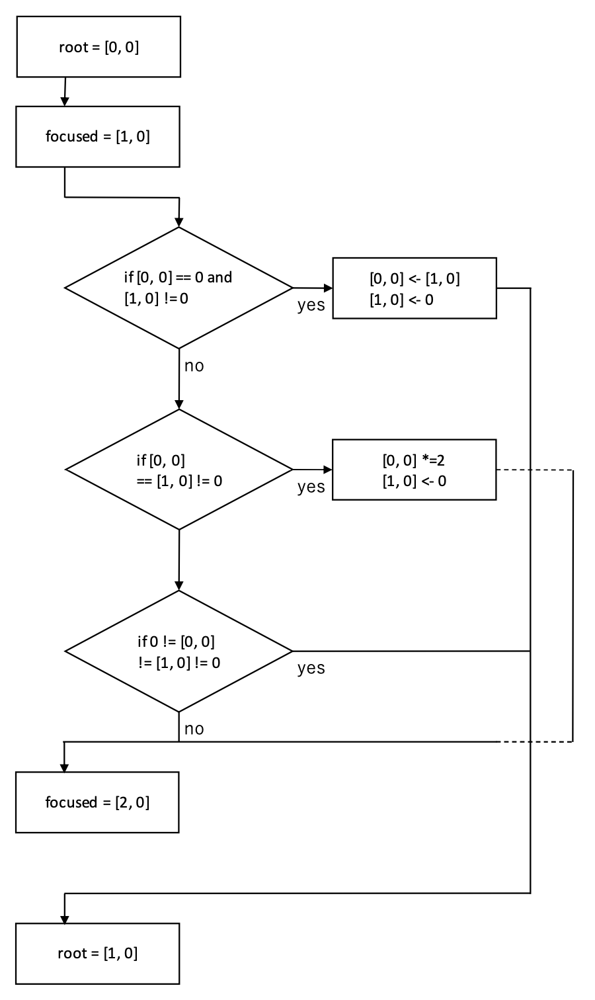
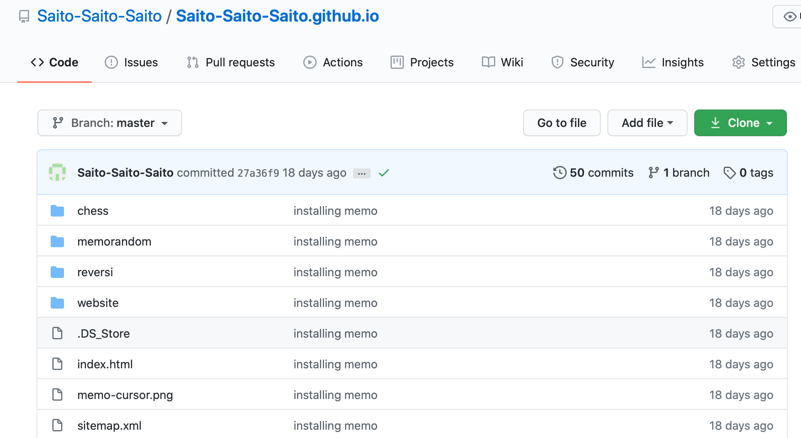

Stage 2 プログラムの機能を考える
みなさま、ようこそ。2048 のプログラミング第 2 ステージです。プログラムをコーディングする前にある程度の大枠を決めてしまいましょう。この作業がないと全体の統率が図れませんよ。第一、どこに向かっているのかわからないのに全く見知らぬ土地を歩くのって怖いだけじゃなくてめんどくさいでしょ？
目次
2-1 盤面
ノーマルの 2048 の盤面は 4 マス × 4 マスの正方形ですよね。ここはボードゲームのプログラミングの定石通りに多重配列でいきましょう。ここでいきなり 4 × 4 のリストを作るのではなく、あとでサイズ変更ができるように十難に設計しておくのがミソですね。8 × 8 とか、できないことはありませんから。
ということで盤面は
board = [row][col]
という形にします。ここで row は横長の行(row)、col は縦長の列(collumn)を表します。なぜこの順番にするかというと、強い意味はありませんが、盤面を表示するとき(Stage 4)に順当にできるという意味がないわけではない。
盤面の上に乗る数字はそのまま board[row][col] の値にしてしまいましょう。「数字がないところはどうすんの？」って、そりゃ 0 がいいんじゃないですか？まあ、ゲームを進めていくうちに絶対に出てくることがないような数字であればなんだっていいですよ。
2-2 操作
2048 のプログラミングで一番面倒な、盤面の操作について考えましょう。動かせる向きは上下左右の 4 方向、その方向に動くことで同じ数が足し合わされていきます。これをどうやって表現しましょうかね。
とりあえず盤面を上に動かす場合を例にとってみましょう。こういう場合はどうでしょうか。
全く難しい問題ではありませんが、これを機械にやらせるということを念頭に置いて、そのアルゴリズムを予想してみてください。答えはこんなんですよね。まさか間違えるわけないとは思いますが。
さて、これをどうやってプログラミングしましょうか。とりあえず一番左上 [0, 0] から始めるとして、まずはその直下のマス [1, 0] に注目します。この 2 マスの関係は
[0, 0] == EMPTY and [1, 0] == EMPTY[0, 0] == EMPTY and [1, 0] != EMPTY[0, 0] != EMPTY and [1, 0] == EMPTY[0, 0] != EMPTY and [1, 0] == EMPTY
の 4 つですね。まず一番上、両方とも EMPTY であれば何もすることはありません。その次の [1, 0] だけが EMPTY の場合、数字を [0, 0] に持ってこなければなりません。[1, 0] は数字がなくなるわけですから、当然 EMPTY にします。三番目、[0, 0] だけが EMPTY でない場合も何もする必要はありません。問題は 4 番目です。こいつには
0 != [0, 0] == [0, 1] != 00 != [0, 0] != [0, 0] != 0
の 2 通りあり、対処も異なってきます。両方の数が揃う場合は単純で、[0, 0] にある数を 2 倍、[1, 0] を EMPTY にすれば事足ります。一方で両方の数字が揃わない場合、この段階で特にやることはありませんが、こういう場合はどうでしょうか。
この次に [2, 0] と [0, 0] を比較して数字を移すか考えるわけですが、当然この二つの間で数のやりとりはできません。もっと言えば、もし [3, 0] に 2 があっても [0, 0] とは数のやりとりはできませんから、[0, 0] について考える必要はもうないことになります。
ここまでのフローを示すとこうなりますね。
これ以上は Stage 5 で扱うことになりますが、一応大筋として頭の中に入れておいてください。
2-3 進行
ゲーム進行を考えましょう。2-1 でせっかくマスのサイズを拡張できるようにしたんですから、サイズとアガリになる数の設定くらいはできるようにしておきましょうか。そして最初の盤面を表示する。ここまでが初期設定です。
実際にゲームに入った後のでアインに移ります。当然ながら上下左右の方向を指定できるようにしてあげなければなりませんが、残念ながら我々はまだ上下左右キーなどの高等な技術を使うことはできません。そこで数字を使ってコマンド風に操縦する方策と、ゲームなんかで左手用に使う W/S/D/A のキーに対応できるようにしましょう。それぞれ上・下・右・左に対応します。入力を受け取ったら方向に変換、もし正当な入力でなければ「もう一度やり直せ」と突き返すことになります。また、その方向に動かすことができない場合でも、もう一度やり直してもらいます。うまくいったら移動後の盤面を表示して繰り返しです。
ゲームが終了するのは
- アガリの数がでてきたとき
- これ以上盤面を動かせなくなったとき
の 2 パターンありますね。両方ともループを脱出して結果を教えてあげましょう。
次回予告
次回からはマジでコード本文の説明になります。まだ私のコードを用意されていない方は、こちらのページからコードを手に入れてください。
パソコンの方はこんなページがでてきて、右上の方に緑色で Clone or download って書いてるところをクリックすると、コードをダウンロードすることができます。
スマホの方は、かなり見づらいのですが github のページ上で私のコードを開いていただくほかに賢明な方法がないかもしれません。嫌ならパソコンで見てくれ。